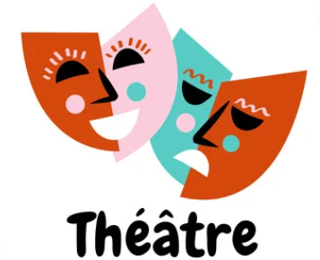
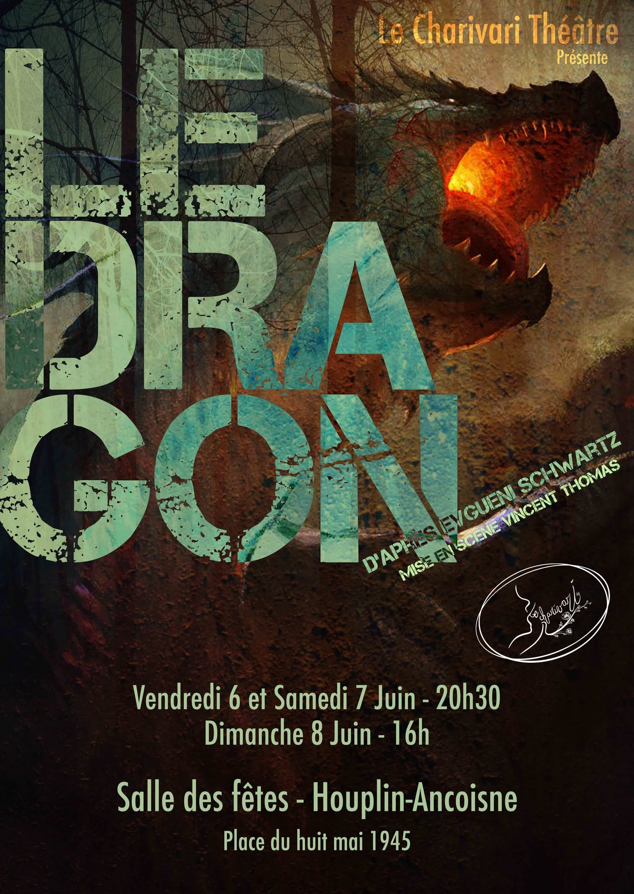
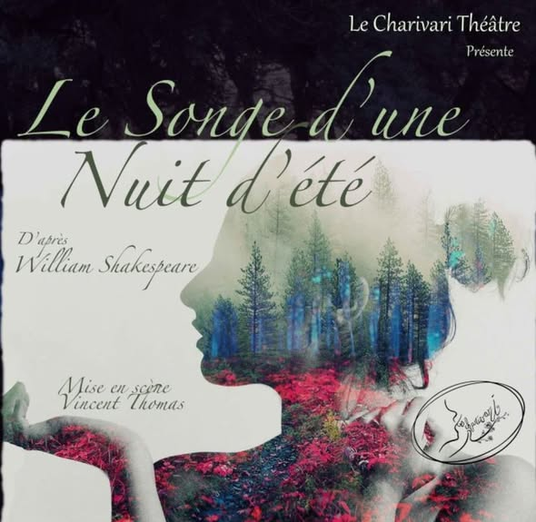

Stabat Soror Furiosa
Du 4 au 7 juin 2026
Voir le spectacle
Le Charivari Théâtre est une troupe de théâtre amateur qui, depuis plus de 20 ans, sévit à Houplin-Ancoisne et sur les planches des communes environnantes. Nous nous retrouvons chaque mardi à 20h00 à la salle des fêtes d'Houplin-Ancoisne pour répéter de nouveaux spectacles, classiques ou créations originales. De Molière à Feydeau, d'Alfred Jarry aux contes des frères Grimm, Le Charivari a déjà exploré un répertoire assez éclectique à travers une vingtaine de pièces. N'hésitez pas à nous rejoindre !
| Nom | Rôle |
|---|---|
| Marie-Laure FERNANDES | Présidente |
| Vincent THOMAS | Metteur en scène |
Du 4 au 7 juin 2026
Voir le spectacle
Du 28 au 29 novembre 2025
Voir le spectacle
Du 29 au 30 novembre 2024
Voir le spectaclePrésidente : Marie-Laure FERNANDES
Metteur en scène : Vincent THOMAS
Email : lecharivari@gmail.com